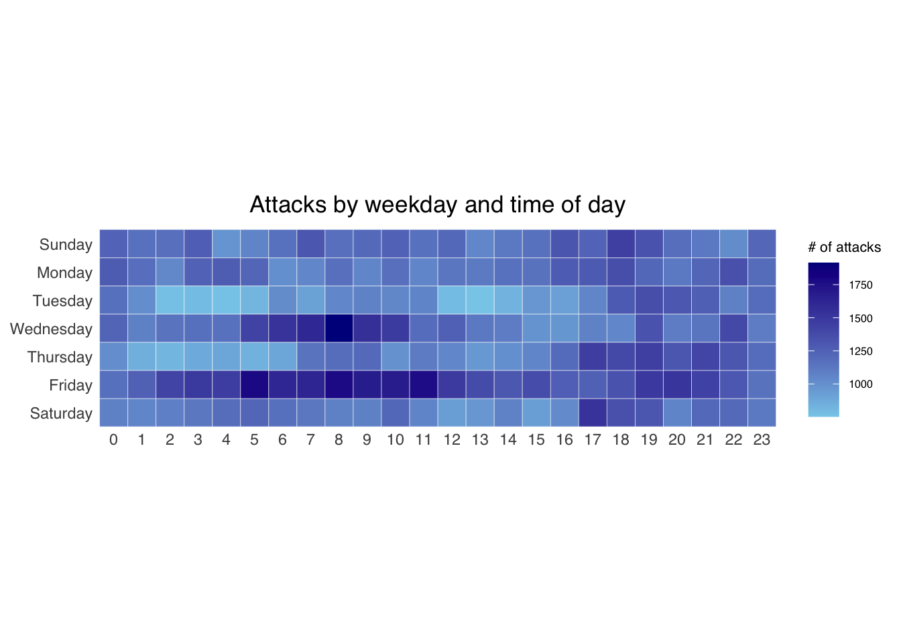
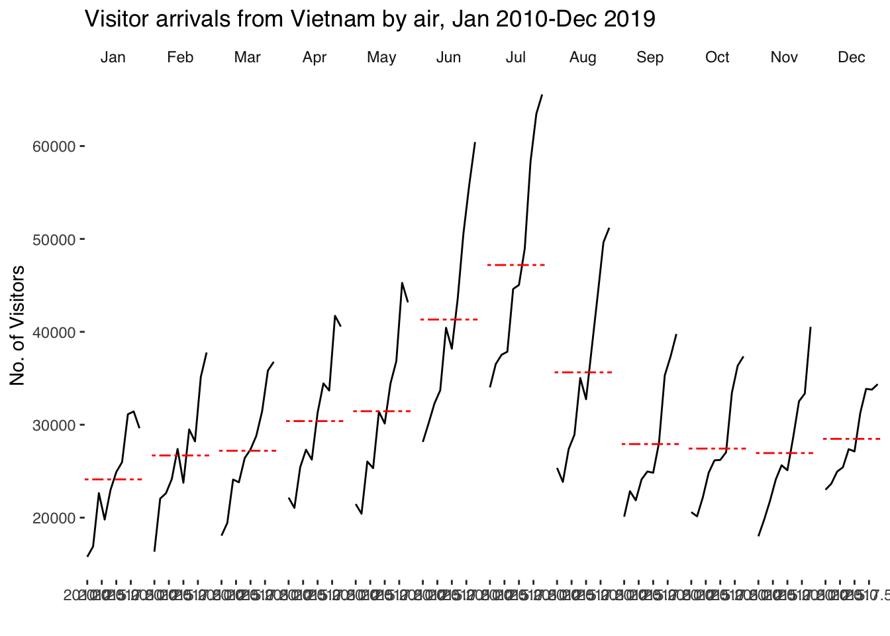
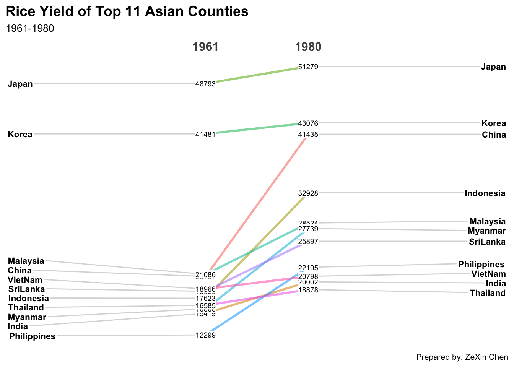
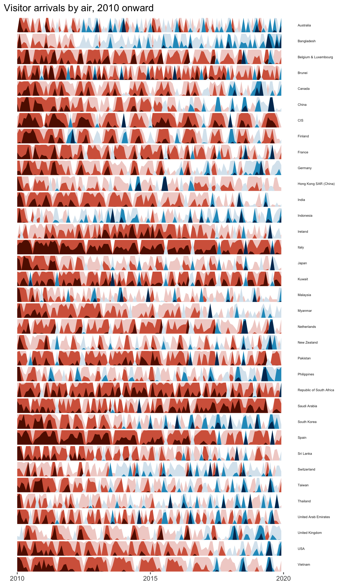

pacman::p_load(scales, viridis, lubridate, ggthemes,
gridExtra, readxl, knitr, data.table,
CGPfunctions, ggHoriPlot, tidyverse)Hands-on Exercise 8
Visualising and Analysing Time-oriented Data
1 Overview
In this hands-on exercise we learn to create several time-oriented data visualisations using R:
- a calendar heatmap using ggplot2
- a cycle plot using ggplot2
- a slopegraph using the CGPfunctions package
- a horizon chart using the ggHoriPlot package
2 Getting Started
2.1 Installing and Loading Packages
3 Plotting Calendar Heatmap
A calendar heatmap shows the intensity of an event across two time dimensions, here the weekday and the hour of day.
3.1 The Data
We use eventlog.csv, which holds 199,999 time-series cyber attack records by country. There are three columns: timestamp (date-time), source_country (ISO country code), and tz (time zone).
3.2 Importing the Data
attacks <- read_csv("data/eventlog.csv")3.3 Examining the Data Structure
It is good practice to examine the imported data frame before further analysis. kable() gives a tidy preview.
kable(head(attacks))| timestamp | source_country | tz |
|---|---|---|
| 2015-03-12 15:59:16 | CN | Asia/Shanghai |
| 2015-03-12 16:00:48 | FR | Europe/Paris |
| 2015-03-12 16:02:26 | CN | Asia/Shanghai |
| 2015-03-12 16:02:38 | US | America/Chicago |
| 2015-03-12 16:03:22 | CN | Asia/Shanghai |
| 2015-03-12 16:03:45 | CN | Asia/Shanghai |
3.4 Data Preparation
3.4.1 Deriving Weekday and Hour Fields
Before plotting we derive two new fields, wkday and hour. We write a function to do this, converting each timestamp to its real local time first.
make_hr_wkday <- function(ts, sc, tz) {
real_times <- ymd_hms(ts,
tz = tz[1],
quiet = TRUE)
dt <- data.table(source_country = sc,
wkday = weekdays(real_times),
hour = hour(real_times))
return(dt)
}3.4.2 Building the Cleaned Tibble
We order the weekday and hour fields as factors so they plot in a sensible order.
wkday_levels <- c('Saturday', 'Friday',
'Thursday', 'Wednesday',
'Tuesday', 'Monday',
'Sunday')
attacks <- attacks %>%
group_by(tz) %>%
do(make_hr_wkday(.$timestamp,
.$source_country,
.$tz)) %>%
ungroup() %>%
mutate(wkday = factor(
wkday, levels = wkday_levels),
hour = factor(
hour, levels = 0:23))kable(head(attacks))| tz | source_country | wkday | hour |
|---|---|---|---|
| Africa/Cairo | BG | Saturday | 20 |
| Africa/Cairo | TW | Sunday | 6 |
| Africa/Cairo | TW | Sunday | 8 |
| Africa/Cairo | CN | Sunday | 11 |
| Africa/Cairo | US | Sunday | 15 |
| Africa/Cairo | CA | Monday | 11 |
3.5 Building the Calendar Heatmap
We aggregate the attacks by weekday and hour, then plot a tile for each combination. Colour here encodes the number of attacks, which is the whole point of the heatmap.

grouped <- attacks %>%
count(wkday, hour) %>%
ungroup() %>%
na.omit()
ggplot(grouped,
aes(hour,
wkday,
fill = n)) +
geom_tile(color = "white",
size = 0.1) +
theme_tufte(base_family = "Helvetica") +
coord_equal() +
scale_fill_gradient(name = "# of attacks",
low = "sky blue",
high = "dark blue") +
labs(x = NULL,
y = NULL,
title = "Attacks by weekday and time of day") +
theme(axis.ticks = element_blank(),
plot.title = element_text(hjust = 0.5),
legend.title = element_text(size = 8),
legend.text = element_text(size = 6))3.6 Building Multiple Calendar Heatmaps
We can build one heatmap per country for the four countries with the most attacks.
3.6.1 Identifying the Top Four Countries
attacks_by_country <- count(
attacks, source_country) %>%
mutate(percent = percent(n/sum(n))) %>%
arrange(desc(n))3.6.2 Preparing the Tidy Data Frame
top4 <- attacks_by_country$source_country[1:4]
top4_attacks <- attacks %>%
filter(source_country %in% top4) %>%
count(source_country, wkday, hour) %>%
ungroup() %>%
mutate(source_country = factor(
source_country, levels = top4)) %>%
na.omit()3.6.3 Plotting the Faceted Heatmap

ggplot(top4_attacks,
aes(hour,
wkday,
fill = n)) +
geom_tile(color = "white",
size = 0.1) +
theme_tufte(base_family = "Helvetica") +
coord_equal() +
scale_fill_gradient(name = "# of attacks",
low = "sky blue",
high = "dark blue") +
facet_wrap(~source_country, ncol = 2) +
labs(x = NULL, y = NULL,
title = "Attacks on top 4 countries by weekday and time of day") +
theme(axis.ticks = element_blank(),
axis.text.x = element_text(size = 7),
plot.title = element_text(hjust = 0.5),
legend.title = element_text(size = 8),
legend.text = element_text(size = 6))4 Plotting Cycle Plot
A cycle plot shows a time-series pattern and trend within and across a repeating cycle, here visitor arrivals from Vietnam by month across years.
4.1 Data Import
air <- read_excel("data/arrivals_by_air.xlsx")4.2 Deriving Month and Year Fields
air$month <- factor(month(air$`Month-Year`),
levels = 1:12,
labels = month.abb,
ordered = TRUE)
air$year <- year(ymd(air$`Month-Year`))4.3 Extracting the Target Country
Vietnam <- air %>%
select(`Vietnam`,
month,
year) %>%
filter(year >= 2010)4.4 Computing Year Average Arrivals by Month
hline.data <- Vietnam %>%
group_by(month) %>%
summarise(avgvalue = mean(`Vietnam`))4.5 Plotting the Cycle Plot
Each panel is one month, the black line shows the year-on-year trend, and the red reference line marks that month’s average. Colour is used only for the reference line, to separate it from the data.

ggplot() +
geom_line(data = Vietnam,
aes(x = year,
y = `Vietnam`,
group = month),
colour = "black") +
geom_hline(aes(yintercept = avgvalue),
data = hline.data,
linetype = 6,
colour = "red",
size = 0.5) +
facet_grid(~month) +
labs(axis.text.x = element_blank(),
title = "Visitor arrivals from Vietnam by air, Jan 2010-Dec 2019") +
xlab("") +
ylab("No. of Visitors") +
theme_tufte(base_family = "Helvetica")5 Plotting Slopegraph
A slopegraph compares values at two points in time and shows how each item moves between them.
5.1 Data Import
rice <- read_csv("data/rice.csv")5.2 Plotting the Slopegraph
We convert Year to a factor and keep only 1961 and 1980, then use newggslopegraph() of the CGPfunctions package.

rice %>%
mutate(Year = factor(Year)) %>%
filter(Year %in% c(1961, 1980)) %>%
newggslopegraph(Year, Yield, Country,
Title = "Rice Yield of Top 11 Asian Counties",
SubTitle = "1961-1980",
Caption = "Prepared by: ZeXin Chen")6 Plotting Horizon Chart
A horizon chart is a compact way to compare many time-series at once. Each series is split into colour bands by value, then the bands are layered so each series takes very little vertical space. This makes it easy to scan many countries together.
6.1 Preparing the Data
We reshape the air arrivals data into a long format and derive a proper date field, keeping data from 2010 onward.
air_long <- air %>%
pivot_longer(cols = -c(`Month-Year`, month, year),
names_to = "country",
values_to = "arrivals") %>%
mutate(date = ymd(`Month-Year`)) %>%
filter(year >= 2010)6.2 Plotting the Horizon Chart
geom_horizon() of the ggHoriPlot package builds the bands, and we facet by country so each one gets its own compact strip. Colour here encodes the value band, which is the core idea of the chart.

air_long %>%
ggplot() +
geom_horizon(aes(x = date,
y = arrivals),
origin = "midpoint",
horizonscale = 6) +
scale_fill_hcl(palette = 'RdBu') +
facet_grid(country ~ .) +
theme_few() +
theme(panel.spacing.y = unit(0, "lines"),
strip.text.y = element_text(size = 5,
angle = 0,
hjust = 0),
axis.text.y = element_blank(),
axis.ticks.y = element_blank(),
panel.border = element_blank(),
legend.position = 'none') +
labs(title = 'Visitor arrivals by air, 2010 onward',
x = NULL, y = NULL)